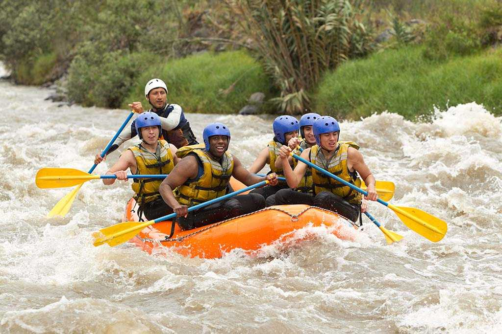
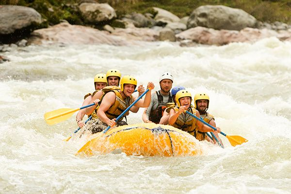

At Utah White Water Rafting, our mission is to deliver unforgettable adventure experiences! Join us for the thrill of a lifetime on Utah’s most exciting rivers!


White Water Rafting
History
Since our founding in 2015, Utah White Water Rafting has grown from a small family-run operation on the Bruce Canyon River into one of Utah’s most trusted adventure tour providers. Our passion for nature and commitment to safety have helped us create unforgettable experiences for thousands of guests every year.

Our guides are not just experts in navigating challenging waters—they’re storytellers, nature lovers, and dedicated to ensuring every trip is safe and fun. Whether you’re a first-time rafter or a seasoned adventurer, we’re here to make your journey unforgettable.
Adventure Awaits You!